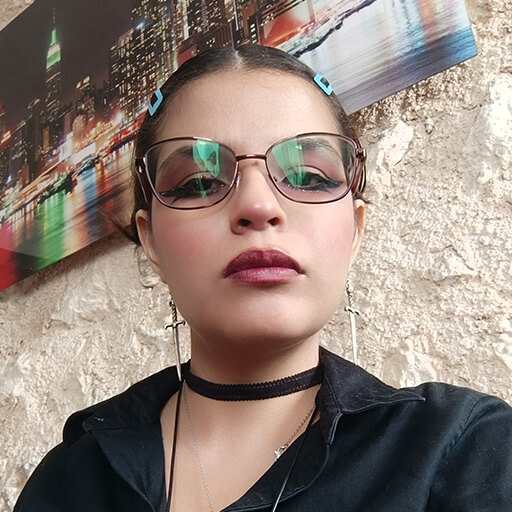

Mi Perfil Profesional 🍄

★ ★ ★CITLALLI JAZMIN LOPEZ MENDEZ
Contacto
arnolystar12@gmail.com
Ciudad del Carmen
Perfil
Soy diseñadora multimedia interesada en integrarme a un entorno laboral donde pueda poner en práctica mis habilidades digitales. Tengo experiencia en ilustración, tecnología y desarrollo creativo, abarcando áreas como modelado 3D, diseño gráfico, desarrollo web, branding y mockups.
Perfil Profesional
Soy diseñadora multimedia interesada en integrarme a un entorno laboral donde pueda poner en práctica mis habilidades digitales. Tengo experiencia en ilustración, tecnología y desarrollo creativo, abarcando áreas como modelado 3D, diseño gráfico, desarrollo web, branding y mockups.
Aptitudes
- Ilustrador
- Habilidad creativa
- Arte Tradicional
- Programas: C++, Unity, Visual
- Animación intermedio
- Profesional Autónomo y responsable
- Modelado 3d básico
- Persona responsable y dedicada
- Comprometida
Idiomas
Español: Idioma nativo
Inglés: Básico nivel 2
Experiencia Laboral
Ilustradora tradicional y Diseñador Autónomo - Cd del Carmen
Agosto 2022 - Actualidad
- Creación de ilustraciones en papel.
- Desarrollo de creaciones de alta calidad.
- Uso de teoría del color e iluminación.
- Diseños para medios digitales e impresos.
Diseñador Autónomo - Cd del Carmen
Agosto 2022 - Actualidad
- Atención al cliente.
- Diseño web y mockups.
- Ediciones digitales.
- Uso de Photoshop.
Formación Académica
Licenciatura en Diseño Multimedia
Agosto 2022 - Actualidad
Universidad Autónoma del Carmen | Ciudad del Carmen
Cursos y Actividades
Club de Animación - Universidad Autónoma del Carmen
Marzo 2023 - Actualidad
- Organización de eventos.
- Desarrollo de animaciones.
- Preparación de materiales.
- Creación de taumatropo.
- Experiencia en ventas.